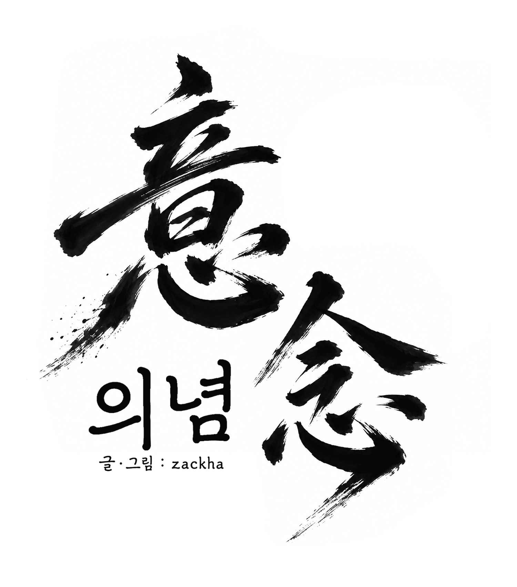

살인율 0. VEREN이 이 도시에 한 약속입니다.Zero murders. That is VEREN's promise to this city.
여러분의 밤은 안전합니다.Your nights are safe.
전기도, 수도도, 거리의 치안까지 VEREN이 함께합니다.Power, water, and the safety of your streets. VEREN is with you.

죽은 자의 기억은 알이 되어 남는다. 그 안을 매일 걷는 사람에게, 용서는 가능한 일일까.The memories of the dead remain as eggs. For those who walk inside them every day, is forgiveness possible?
살인율 0을 유지하는 신도시. 하지만 도시 밖에서는 시기와 질투로 인한 범죄와 살인이 끊이지 않는다. 신입 요원 이서현은 살해당한 사람이 남긴 알 속으로 들어가 죽음의 원인을 밝힌다. 그러다 한 알에서 자기 얼굴을 한 사람을 만난다.A new city that keeps its murder rate at zero. Beyond its borders, envy and jealousy still drive crime and murder every day. Rookie agent Lee Seo Hyeon steps inside the eggs left by murder victims to find out how they died. Then, in one egg, she meets someone with her own face.